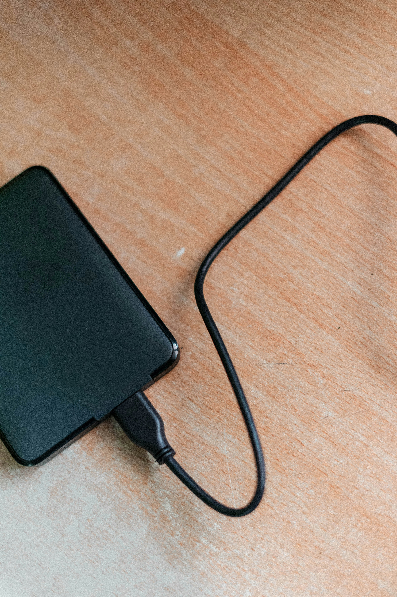
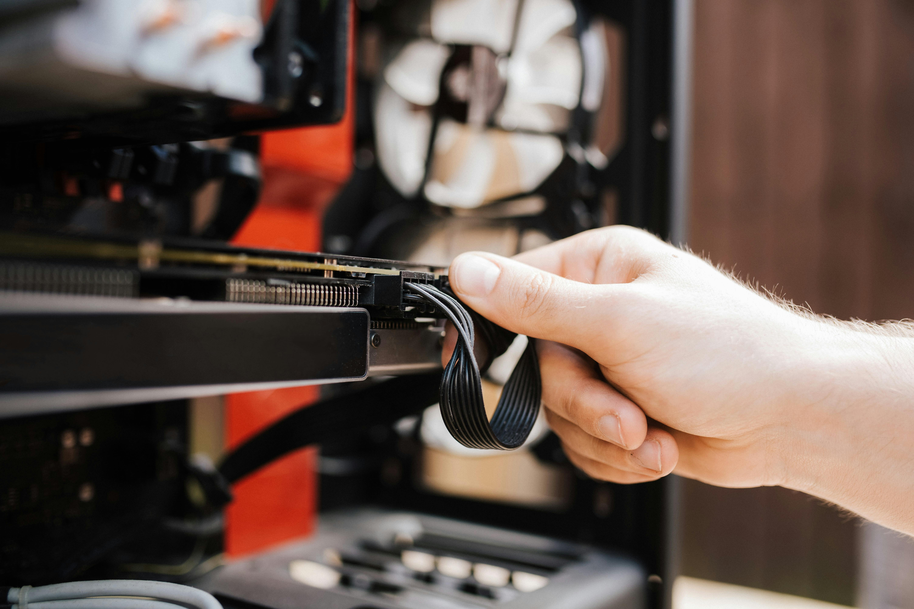

Récupération de Données
Votre PC ne démarre plus, votre disque dur est tombé, vos fichiers ont disparu après un formatage ? Ne paniquez pas — dans la grande majorité des cas, vos données peuvent être récupérées. Setup Avenir est votre spécialiste depuis 20 ans.
Quand fait-on appel à la récupération de données ?
Vos données ne disparaissent pas immédiatement d'un disque défaillant ou formaté. Elles restent souvent intactes sur le support — c'est l'accès qui est bloqué. La récupération consiste à contourner ce blocage et extraire vos fichiers.
🖥️ PC qui ne démarre plus
Le système est planté, Windows ne se charge pas, mais vos documents photos et vidéos sont toujours sur le disque. Nous branchons le disque en externe pour extraire vos données avant toute réparation système.
💧 Disque dur externe tombé ou mouillé
Un choc ou un dégât des eaux peut endommager la tête de lecture du disque dur mais les plateaux magnétiques restent souvent intacts. Plus vous attendez, plus les risques augmentent — venez rapidement.
🗑️ Formatage ou suppression accidentelle
Vous avez formaté par erreur ou vidé la corbeille trop vite ? Tant que le disque n'a pas été réécrit massivement, une récupération logicielle peut retrouver vos fichiers.
⚡ Panne électrique ou surtension
Une coupure de courant brutale ou une surtension peut corrompre le système de fichiers. Le disque physique est souvent intact — la récupération est dans ce cas très souvent réussie.


Tous Types de Supports
Quel que soit votre support de stockage, nous avons l'équipement pour intervenir.
💿 Disques Durs HDD (PC Windows)
Récupération de données sur disque dur mécanique interne — que le PC soit HS ou le disque abîmé logiquement ou physiquement.
🍎 Disques Durs HDD (Mac)
Les Mac utilisent un formatage HFS+/APFS différent de Windows. Nous maîtrisons les deux écosystèmes pour récupérer vos données Apple.
⚡ SSD / SSD NVMe / M.2 / PCI-Express
Les SSD ne se récupèrent pas comme les HDD. Nous utilisons des méthodes spécifiques aux mémoires flash pour extraire vos fichiers des SSD SATA, NVMe, M.2 et cartes PCI-Ex.
🔌 Disque Non Reconnu
Votre disque n'apparaît pas dans l'explorateur ou n'affiche pas sa capacité correcte ? Problème de partition, de table de fichiers ou d'électronique — nous diagnostiquons et récupérons.
📷 Carte SD / Micro-SD / Clé USB
Photos de vacances sur une SD corrompue ? Clé USB qui ne s'ouvre plus ? Nous récupérons vos fichiers sur tous types de mémoire flash amovible.
💻 PC Équipé de 2 Disques Durs
Si votre PC contient deux disques durs (ex : RAID 0, ou disque système + disque données), la récupération est facturée par disque. Tarif précisé lors du devis.
Pour les cas les plus complexes (disque dur avec plateaux endommagés, tête de lecture cassée, puce NAND morte), nous orientons vers une récupération en salle blanche. Renseignez-vous directement en magasin pour une évaluation et un devis personnalisé.
Ce que vous devez faire (et ne pas faire)
✅ À faire immédiatement
Éteignez le PC ou débranchez le disque dès que vous constatez un problème. Moins le disque fonctionne après une panne, meilleures sont les chances de récupération. Amenez-nous le support le plus vite possible.
❌ Ce qu'il ne faut surtout pas faire
N'essayez pas de "réparer" vous-même avec des logiciels gratuits trouvés sur Internet — ils peuvent écraser les données. N'installez rien sur le disque défaillant. Ne le secouez pas si vous entendez un cliquetis.

Tarifs sur Devis
Les tarifs de récupération de données varient selon le type de support, l'étendue des dégâts et le volume à récupérer. Il n'existe pas de prix fixe universel — chaque cas est unique.
01 34 12 61 82 85 Rue des Chesneaux, 95160 Montmorency — Mar–Sam 10h30–19h, Lun 10h30–13h